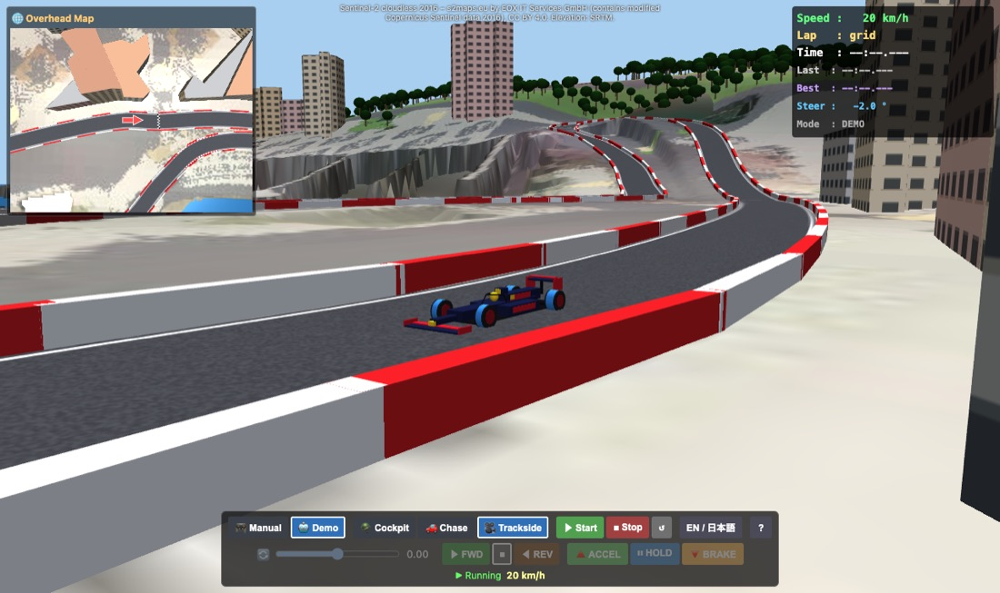

Monaco Street Circuit
Drive an F1-style car around the Circuit de Monaco, or sit back and let the demo driver take a lap. The car's physics comes from the MuJoCo physics engine, running in your browser.
1. Quick start
Just watch a lap
- Wait until the status line under the buttons says Press ▶ Start to begin.
- Click 🤖 Demo, then ▶ Start.
- Try the three cameras: 🪖 Cockpit, 🚗 Chase and 🎥 Trackside.
Drive it yourself
- Make sure 🎮 Manual is selected, then click ▶ Start.
- Click ▶ FWD to pick the direction. The car does not move until you choose one.
- Click 🔺 ACCEL to speed up. It stays on until you press another pedal.
- Steer with the slider or the ← → keys. Use 🔻 BRAKE before corners and ⏸ HOLD to keep your speed.

2. The screen
| Area | What it shows |
|---|---|
| Main view | Fills the window. It shows whichever camera you picked. |
| Overhead Map (top left) | The area around the car, seen from 150 m up. The red arrow is your car. |
| HUD (top right) | Speed, lap number, current / last / best lap time, the steering angle actually sent to the wheels, and the mode. In Manual mode it also shows your direction and pedal. |
| Credit (top centre) | Where the satellite imagery and elevation data come from. |
| Control bar (bottom) | Top row: mode, camera, Start / Stop / Reset, language, ? (this manual). Bottom row: the manual driving controls. They are greyed out in Demo mode. Below the buttons is the status line. |
3. Driving it yourself
Direction
| Button | Effect |
|---|---|
| ▶ FWD | Drive forwards, up to 300 km/h. |
| ■ | Stop. With no pedal pressed, the car brakes to a standstill. |
| ◀ REV | Reverse, up to about 30 km/h. Handy for backing off a barrier. |
Pedals
You can have only one pedal on at a time. Pressing another pedal switches to it, and pressing the one that is on releases it.
| Pedal | Effect |
|---|---|
| 🔺 ACCEL | Speeds up in the chosen direction, about 0–100 km/h in 3 seconds. |
| ⏸ HOLD | Keeps the speed you have now, like cruise control. |
| 🔻 BRAKE | Slows down to a stop. |
| (none) | The car coasts and slowly loses speed. |
Steering
Drag the 🔄 slider, or press ← / → to move it a step at a time. C centres it. The slider stays where you leave it, so remember to straighten up after a corner.
Tips for Monaco
- The circuit is narrow and lined with barriers everywhere. There is no run-off.
- Slow right down for Sainte Dévote (the first corner), the Casino, the hairpin, the chicane after the tunnel and Rascasse.
- The tunnel and the run along the harbour are the fastest parts.
- If you are stuck against a barrier, click ◀ REV and 🔺 ACCEL to back off, then go forward again. Or press ↺.
4. Demo mode
In 🤖 Demo, an autopilot follows the racing line. It brakes for each corner from a pre-computed speed plan. A lap takes a little over two minutes.
- You can switch modes at any time, even while the car is moving.
- Switching to 🎮 Manual hands the car over at its current speed: ▶ FWD and ⏸ HOLD are selected and the steering is centred.
- Switching back to Demo lets the autopilot pick up from wherever the car is.

5. Cameras
| Camera | View |
|---|---|
| 🪖 Cockpit | The driver's eye: the halo, front wheels and nose in front of you. |
| 🚗 Chase | Slightly behind and above the car. The easiest view to drive with. |
| 🎥 Trackside | A spectator's view. Camera posts stand beside the track about every 130 m. The nearest one follows the car and zooms in like a TV camera, and the view jumps to the next post as the car passes. |
Press V to cycle through the cameras.
6. Lap timing
- You start on the grid, just behind the chequered start/finish line. The HUD shows Lap: grid.
- Crossing the line starts lap 1 and its timer. Every later crossing ends a lap and updates Last and Best.
- Times are measured in simulated time. If your computer can't keep up, the laps still count correctly.
- ↺ Reset puts the car back on the grid and clears the lap times.
7. Warnings and sound
| Warning | When | What happens |
|---|---|---|
| ⚠ CRASH | The car touches a barrier | A flashing red overlay and three beeps. It clears 1.5 s after the car is free. Driving continues. |
| ⚠ OUT OF BOUNDS | The car reaches the edge of the map | Same as a crash. There is an invisible wall there. |
| ⚠ ROLLOVER | The car stays tipped more than about 73° for 0.2 s | The simulation stops and the warning stays up. Press ↺ Reset to continue. |
autostart, press ▶ Start once to turn sound on.
8. Keyboard shortcuts
| Key | Action | Mode |
|---|---|---|
| ← → | Steer left / right one step | Manual |
| C | Centre the steering | Manual |
| F S R | Forward / Stop / Reverse | Manual |
| Space or W | ACCEL on / off | Manual |
| H | HOLD on / off | Manual |
| B | BRAKE on / off | Manual |
| V | Next camera | Both |
| M | Switch Manual ⇄ Demo | Both |
| L | Switch English ⇄ 日本語 | Both |
Hover over a button to see its shortcut.
9. Link options
Add these to the app's address to open it in a particular state. This is handy for sharing a link.
| Option | Values |
|---|---|
mode | manual or demo |
view | cockpit, chase or trackside |
lang | en or ja |
autostart | (no value) start the simulation straight away |
Example: index.html?mode=demo&view=trackside&autostart opens a demo lap on the trackside cameras.
10. Troubleshooting
| Problem | What to try |
|---|---|
| Stuck on Loading Monaco… | The first load downloads about 14 MB, so give it a moment. The app has to be opened from a web server (for example npm run dev). Opening index.html straight from disk doesn't work. |
| Failed to load | Reload the page. The message after it names the file that failed. |
| Black or empty view | Your browser needs WebGL and WebAssembly. Use a recent Chrome, Edge, Firefox or Safari, and check that hardware acceleration is on. |
| Choppy or slow | Make the window smaller, or close other heavy tabs. The app draws two views (main and overhead) every frame. |
| The car won't move | Check that the status line says Running, that ▶ FWD is selected and that 🔺 ACCEL is on. After a rollover, press ↺ Reset. |
| The car won't turn at speed | That's the speed-sensitive steering. Brake first. |
| No sound | Press ▶ Start once, and check that the tab isn't muted. |
11. Map data and credits
- Terrain: SRTM 1″ elevation data.
- Satellite imagery: Sentinel-2 cloudless 2016 by EOX IT Services GmbH (contains modified Copernicus Sentinel data 2016), CC BY 4.0.
- Streets, blocks, parks and the circuit layout were traced from a circuit schematic. Buildings are simplified, and their heights are illustrative, not measured.
- Physics: MuJoCo. Rendering: three.js.
- The car is a generic F1-style model in a dark-blue, red and yellow livery. It carries no team or sponsor branding.
- Differences from the real circuit: the traced lap is 3,211 m (the real one is 3,337 m), and Rascasse and the hairpin were widened slightly so the car can get round.